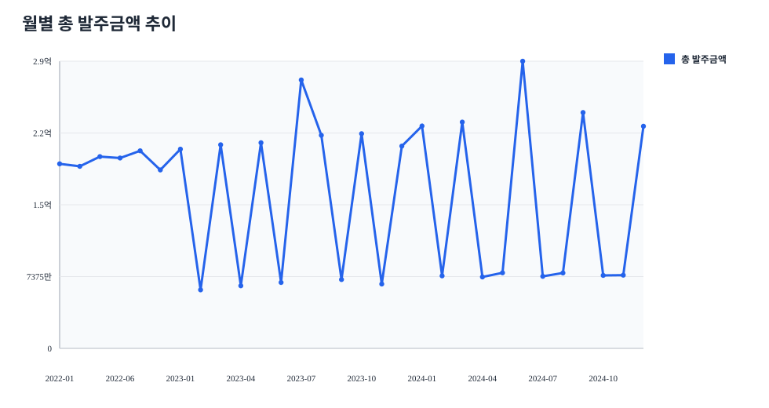
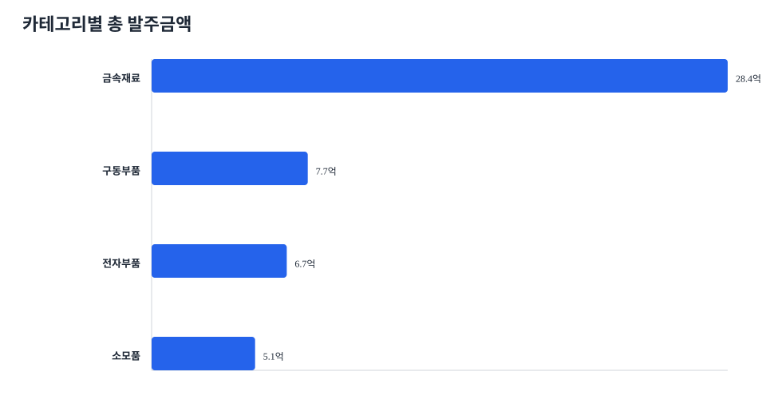
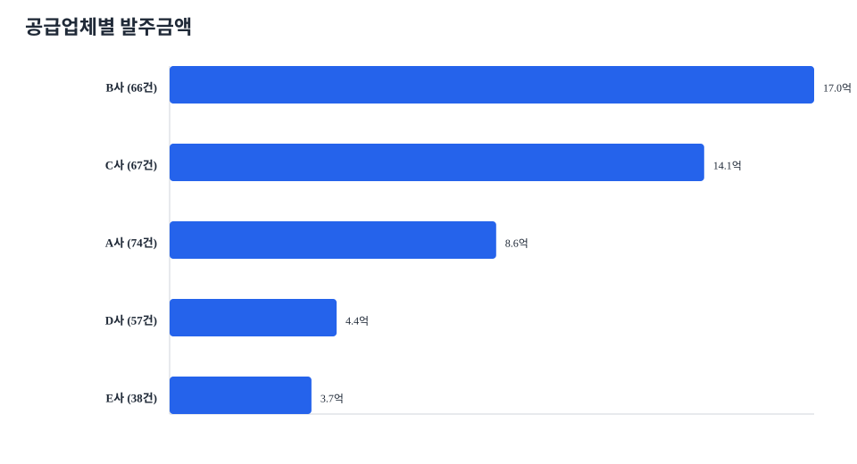
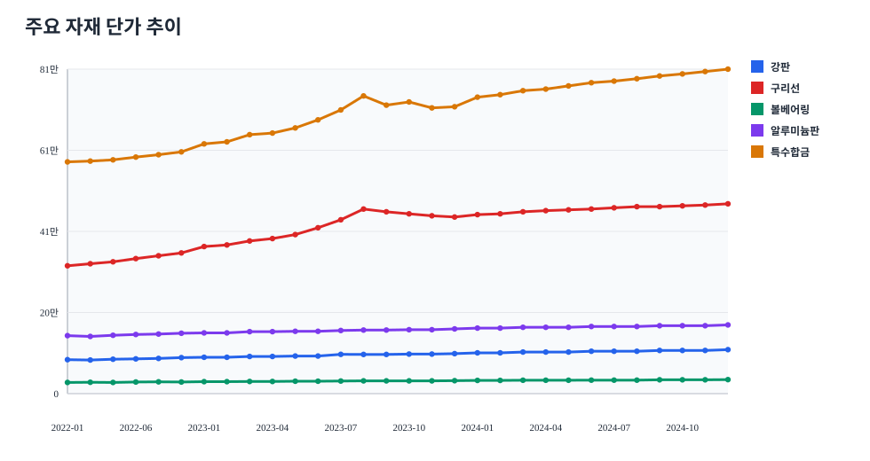
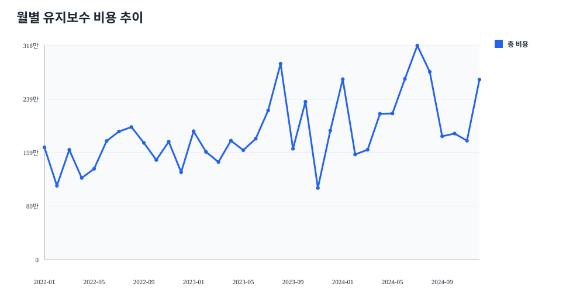
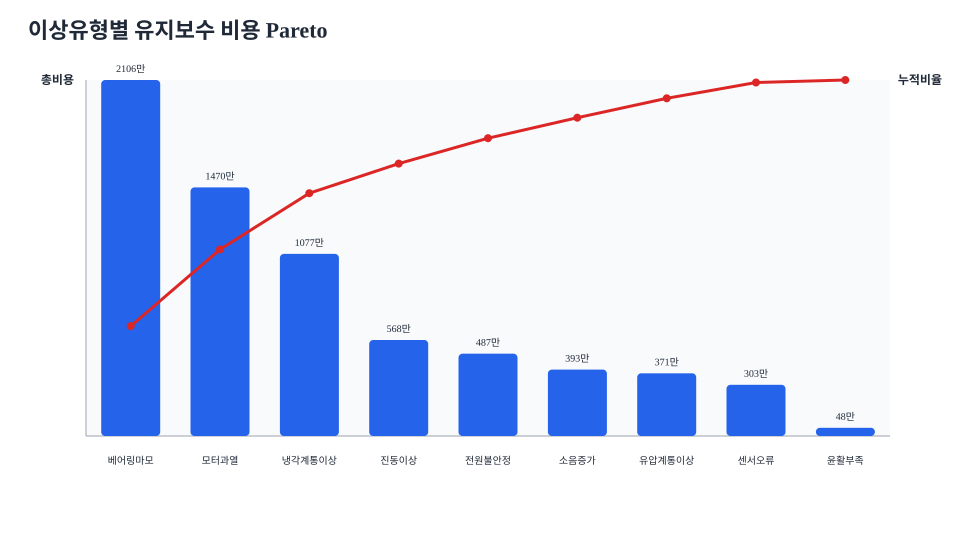
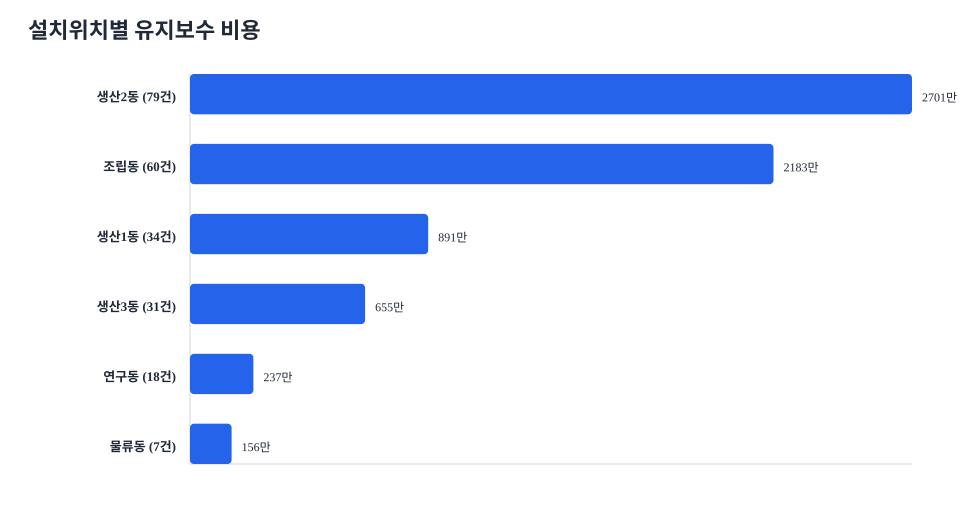
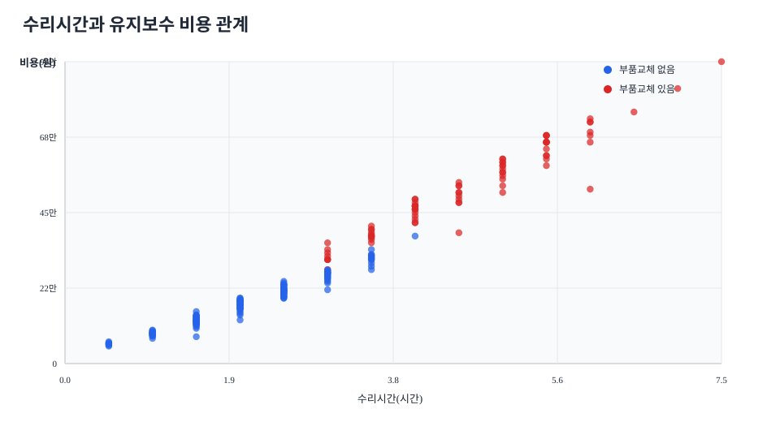
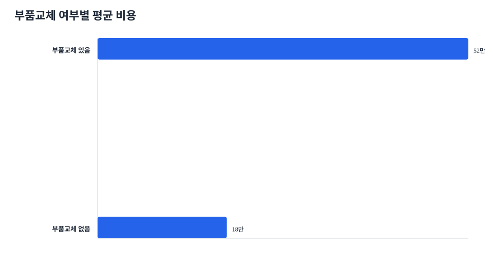

데이터 분석 실습자료 시각화 리포트
두 CSV를 구매비용 관리와 설비 리스크 관리 관점으로 해석하는 교육용 시각화 자료입니다.
자재 데이터302행
유지보수 데이터229행
총 발주금액47.9억원
총 유지보수 비용6823만원
최대 구매 카테고리금속재료
최대 비용 이상유형베어링마모
자재 월별 총 발주금액
월별 흐름으로 예산 변동 구간을 찾습니다.

카테고리별 총 발주금액
금속재료가 가장 큰 구매비 관리 대상입니다.

공급업체별 발주금액
비용 규모가 큰 공급업체를 우선 관리합니다.

주요 자재 단가 추이
상위 품목의 단가 상승 리스크를 확인합니다.

월별 유지보수 비용
발생 건수와 비용 흐름을 함께 봅니다.

이상유형별 비용 Pareto
베어링마모와 모터과열이 우선 관리 대상입니다.

설치위치별 유지보수 비용
생산2동과 조립동에 비용이 집중됩니다.

수리시간과 비용 관계
고비용/장시간 사건을 찾아 리뷰합니다.

부품교체 여부별 평균 비용
부품교체 수리의 비용 영향을 확인합니다.

실습 마무리 질문
구매비 관리 대상 1개, 유지보수 우선 관리 대상 1개, 다음 달 운영 개선 액션 2~3개를 적어보세요.